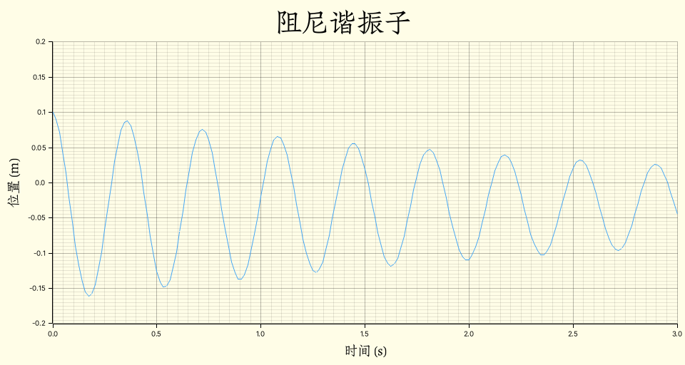
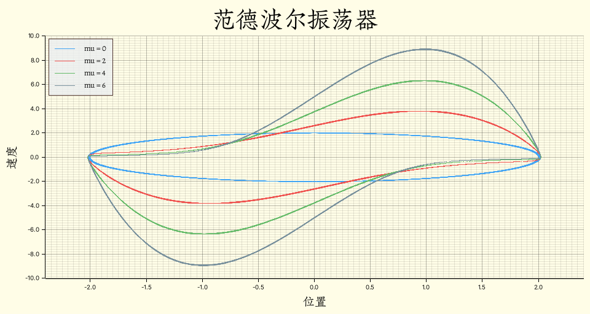

Phyrs - 0x03
archive time: 2025-07-12
模块与函数的组织是一门技术
前面两节大体介绍了动力学的相关概念，并且通过例子说明分析流程
这一节将介绍如何让之前的代码通用
随时间、位置和速度变化的力
之前提到了可以通过欧拉法来分析系统状态变化， 对于一个基本的三维物体，状态可以由质量、位置、速度以及时间来描述：
#[derive(Clone)]
pub struct Particle<R: RealFloat, const E: usize> {
pub mass: R,
pub charge: R,
pub position: VectorC<R, E>,
pub velocity: VectorC<R, E>,
pub time: R,
}此时牛顿第二定律可以表示为：
此时状态转移方程可以表示为：
基于这个状态转移方程，我们可以得到一系列的状态：
根据研究的问题判断迭代终止条件，最后的状态就是我们要的结果
使用 Rust 实现可以得到：
impl<'a, R: RealFloat + 'a, const E: usize> Particle<R, E> {
pub fn default_transition(
acceleration: Rc<dyn Fn(Self) -> VectorC<R, E>>,
dt: R,
) -> Rc<dyn Fn(Self) -> Self + 'a> {
Rc::new(move |p: Self| -> Self {
let velocity = p.velocity.clone() + acceleration(p.clone()) * dt.clone();
let position = p.position.clone() + velocity.clone() * dt.clone();
Self {
mass: p.mass,
charge: p.charge,
velocity,
position,
time: p.time.clone() + dt.clone(),
}
})
}
pub fn simulate(self, transition: Rc<dyn Fn(Self) -> Self>) -> Iterate<'a, Self> {
Iterate::of(transition, self)
}
}阻尼谐振子
作为受力随位置和速度相关的例子，可以考虑有一个阻尼谐振子， 即一个竖直悬挂的弹簧，末端有一个小球
假设向上为正方向，并且零点选择在弹簧平衡时的末端位置， 小球质量为 ，半径为
假设空气阻力系数为 ，空气密度为 ， 重力加速度为 ，则此时系统受力为：
其中 表示弹簧距离平衡点的相对位移
若劲度系数 ，初始位置为 ，初速度为 ，则：
use std::rc::Rc;
use phyrs::newton::particle::Particle;
use plotters::{
chart::ChartBuilder,
prelude::{BitMapBackend, IntoDrawingArea},
series::LineSeries,
style::full_palette::{BLUE_400, YELLOW_50},
};
use rmatrix_ks::{
matrix::vector::{VectorC, basis_vector},
number::{
instances::double::Double,
traits::{floating::Floating, fractional::Fractional, zero::Zero},
},
};
fn main() {
run().unwrap()
}
fn run() -> Option<()> {
// 初始状态
let state = Particle::<Double, 1>::without_charge(
Double::of(2.7e-3),
VectorC::of(&[0.1].map(Double::of))?,
VectorC::default(),
Double::zero(),
);
// 加速度
let total_acc = Rc::new(|s: Particle<Double, 1>| -> VectorC<Double, 1> {
let g = -basis_vector(1) * Double::PI.power(Double::of(2.0));
g // 重力
- (s.position * Double::of(0.8) // 弹力
+ s.velocity // 空气阻力
* Double::of(2.0) // 空气阻力系数
* Double::of(1.2) // 空气密度
* Double::PI
* Double::of(2e-2).power(Double::of(2.0)) // A = pi r^2
* Double::half()) / s.mass
});
// 模拟计算
let one_step = Particle::rk4_transition(total_acc, Double::of(0.015625));
// 计算 0 到 3 秒内的运动轨迹
let states = state
.simulate(one_step)
.take_while(|s| s.time <= Double::of(3.0));
// 绘图
let draw_area = BitMapBackend::new("result/draw_damp.png", (960, 512)).into_drawing_area();
draw_area.fill(&YELLOW_50).ok()?;
let mut chart = ChartBuilder::on(&draw_area)
.margin(10)
.caption("阻尼谐振子", ("Zhuque Fangsong (technical preview)", 48))
.x_label_area_size(48)
.y_label_area_size(64)
.build_cartesian_2d(0.0..3.0, -0.2..0.2)
.ok()?;
chart
.configure_mesh()
.axis_desc_style(("Zhuque Fangsong (technical preview)", 24))
.x_desc("时间 (s)")
.y_desc("位置 (m)")
.draw()
.ok()?;
chart
.draw_series(LineSeries::new(
states.map(|s| (s.time.raw(), s.position[(1, 1)].raw())),
&BLUE_400,
))
.ok()?;
draw_area.present().ok()?;
Some(())
}得到的图像为：

可以看到，由于小球的重力，系统的平衡点并不是最初的 ， 而是
欧拉-克罗默方法
实际上，我们使用的方法是欧拉-克罗默方法1
通常的欧拉法使用的是上一个状态的速度来计算下一个状态的位移， 而欧拉-克罗默方法则是使用下一个状态的速度来计算下一个状态的位移，即：
欧拉-克罗默方法的结果比欧拉法更符合能量守恒，精度和稳定性也比欧拉法高
求解微分方程
大部分动力学问题都可以转化为一个求解微分方程的问题
但是大部分微分方程很难得到一个精确解，所以求解微分方程更多的还是使用数值方法，例如欧拉法
由于数值方法多种多样，所以在 Particle 中，
simulate 接受 transition 而不是合力，这是为了将模拟过程与数值方法解耦
比如我们还可以使用四阶龙格-库塔方法2：
// Self: Particle<R, E>
pub fn rk4_transition(
acceleration: Rc<dyn Fn(Self) -> VectorC<R, E>>,
dt: R,
) -> Rc<dyn Fn(Self) -> Self + 'a> {
Rc::new(move |p1: Self| -> Self {
let half_dt = dt.clone() * R::half();
// k1
let k1_dv_dt = acceleration(p1.clone());
let k1_dr_dt = p1.velocity.clone();
// k2
let p2 = Self {
mass: p1.mass.clone(),
charge: p1.charge.clone(),
position: p1.position.clone() + k1_dr_dt.clone() * half_dt.clone(),
velocity: p1.velocity.clone() + k1_dv_dt.clone() * half_dt.clone(),
time: p1.time.clone() + half_dt.clone(),
};
let k2_dv_dt = acceleration(p2.clone());
let k2_dr_dt = p2.velocity;
// k3
let p3 = Self {
mass: p1.mass.clone(),
charge: p1.charge.clone(),
position: p1.position.clone() + k2_dr_dt.clone() * half_dt.clone(),
velocity: p1.velocity.clone() + k2_dv_dt.clone() * half_dt.clone(),
time: p1.time.clone() + half_dt.clone(),
};
let k3_dv_dt = acceleration(p3.clone());
let k3_dr_dt = p3.velocity;
// k4
let p4 = Self {
mass: p1.mass.clone(),
charge: p1.charge.clone(),
position: p1.position.clone() + k3_dr_dt.clone() * dt.clone(),
velocity: p1.velocity.clone() + k3_dv_dt.clone() * dt.clone(),
time: p1.time.clone() + dt.clone(),
};
let k4_dv_dt = acceleration(p4.clone());
let k4_dr_dt = p4.velocity;
// y(n + 1) = y(n) + (k1 + 2 k2 + 2 k3 + k4) dt / 6
let six = R::one() + R::one() + R::one() + R::one() + R::one() + R::one();
let one_over_six = R::one() / six;
let two = R::one() + R::one();
let velocity = p1.velocity
+ (k1_dv_dt + k2_dv_dt * two.clone() + k3_dv_dt * two.clone() + k4_dv_dt)
* dt.clone()
* one_over_six.clone();
let position = p1.position
+ (k1_dr_dt + k2_dr_dt * two.clone() + k3_dr_dt * two + k4_dr_dt)
* dt.clone()
* one_over_six;
Self {
mass: p1.mass,
charge: p1.charge,
velocity,
position,
time: p1.time + dt.clone(),
}
})
}不过多数情况下，欧拉-克罗默方法的精度就已经足够了
| 步长 | 参考值 | 欧拉-克罗默 | 龙格-库塔 |
|---|---|---|---|
| 0.1 | 2980.9579870417283 | 2978.869264319973 | 2980.9576765056436 |
| 0.01 | 2980.9579870417283 | 2980.9730875158602 | 2980.9579870104103 |
范德波尔振荡器
这里再展示一个求解微分方程的例子，即范德波尔振荡器：
类比牛顿第二定律，假设质量和劲度系数都为 ，此时合力可以看成：
则对于 、、 和 有如下代码：
use std::rc::Rc;
use phyrs::newton::particle::Particle;
use plotters::{
chart::{ChartBuilder, SeriesLabelPosition},
prelude::{BitMapBackend, IntoDrawingArea, PathElement},
series::LineSeries,
style::{
Color,
full_palette::{
BLUE_400, BLUEGREY_50, BLUEGREY_400, BROWN_800, GREEN_400, RED_400, YELLOW_50,
},
},
};
use rmatrix_ks::{
matrix::vector::{VectorC, basis_vector},
number::{
instances::double::Double,
traits::{floating::Floating, one::One, zero::Zero},
},
};
fn main() {
run().unwrap()
}
fn run() -> Option<()> {
// 初始状态
let state = Particle::<Double, 1>::without_charge(
Double::one(),
VectorC::of(&[Double::of(2.0)])?,
VectorC::default(),
Double::zero(),
);
// 加速度
let total_acc = |mu: f64| -> Rc<dyn Fn(Particle<Double, 1>) -> VectorC<Double, 1>> {
Rc::new(move |s: Particle<Double, 1>| -> VectorC<Double, 1> {
(basis_vector(1)
* Double::of(mu)
* (Double::one() - s.position[(1, 1)].clone().power(Double::of(2.0)))
* s.velocity[(1, 1)].clone()
- s.position)
/ s.mass
})
};
// 模拟计算
let states0 = state
.clone()
.simulate(Particle::rk4_transition(
total_acc(0.0),
Double::of(0.015625),
))
.take_while(|s| s.time <= Double::of(512.0));
let states2 = state
.clone()
.simulate(Particle::rk4_transition(
total_acc(2.0),
Double::of(0.015625),
))
.take_while(|s| s.time <= Double::of(512.0));
let states4 = state
.clone()
.simulate(Particle::rk4_transition(
total_acc(4.0),
Double::of(0.015625),
))
.take_while(|s| s.time <= Double::of(512.0));
let states6 = state
.simulate(Particle::rk4_transition(
total_acc(6.0),
Double::of(0.015625),
))
.take_while(|s| s.time <= Double::of(512.0));
// 绘图
let draw_area = BitMapBackend::new("result/draw_vanderpol.png", (960, 512)).into_drawing_area();
draw_area.fill(&YELLOW_50).ok()?;
let mut chart = ChartBuilder::on(&draw_area)
.margin(10)
.caption(
"范德波尔振荡器",
("Zhuque Fangsong (technical preview)", 48),
)
.x_label_area_size(48)
.y_label_area_size(64)
.build_cartesian_2d(-2.4..2.4, -10.0..10.0)
.ok()?;
chart
.configure_mesh()
.axis_desc_style(("Zhuque Fangsong (technical preview)", 24))
.x_desc("位置")
.y_desc("速度")
.draw()
.ok()?;
chart
.draw_series(LineSeries::new(
states0.map(|s| (s.position[(1, 1)].raw(), s.velocity[(1, 1)].raw())),
&BLUE_400,
))
.ok()?
.label("mu = 0")
.legend(|(x, y)| PathElement::new(vec![(x, y), (x + 32, y)], BLUE_400));
chart
.draw_series(LineSeries::new(
states2.map(|s| (s.position[(1, 1)].raw(), s.velocity[(1, 1)].raw())),
&RED_400,
))
.ok()?
.label("mu = 2")
.legend(|(x, y)| PathElement::new(vec![(x, y), (x + 32, y)], RED_400));
chart
.draw_series(LineSeries::new(
states4.map(|s| (s.position[(1, 1)].raw(), s.velocity[(1, 1)].raw())),
&GREEN_400,
))
.ok()?
.label("mu = 4")
.legend(|(x, y)| PathElement::new(vec![(x, y), (x + 32, y)], GREEN_400));
chart
.draw_series(LineSeries::new(
states6.map(|s| (s.position[(1, 1)].raw(), s.velocity[(1, 1)].raw())),
&BLUEGREY_400,
))
.ok()?
.label("mu = 6")
.legend(|(x, y)| PathElement::new(vec![(x, y), (x + 32, y)], BLUEGREY_400));
chart
.configure_series_labels()
.border_style(BROWN_800)
.label_font(("Zhuque Fangsong (technical preview)", 16))
.legend_area_size(48)
.background_style(BLUEGREY_50.mix(0.8))
.position(SeriesLabelPosition::UpperLeft)
.draw()
.ok()?;
draw_area.present().ok()?;
Some(())
}对应位置和速度的相图如下：

有了龙格-库塔方法，大部分的常微分方程都可以尝试求解了
不过更重要的是知道如何转化物理问题到微分方程，包括如何确定状态转移函数
-
Semi-implicit Euler method.Wikipedia [DB/OL].(2025-04-15)[2025-07-12]. https://en.wikipedia.org/wiki/Semi-implicit_Euler_method ↩
-
Runge–Kutta methods.Wikipedia [DB/OL].(2025-07-07)[2025-07-12]. https://en.wikipedia.org/wiki/Runge–Kutta_methods ↩